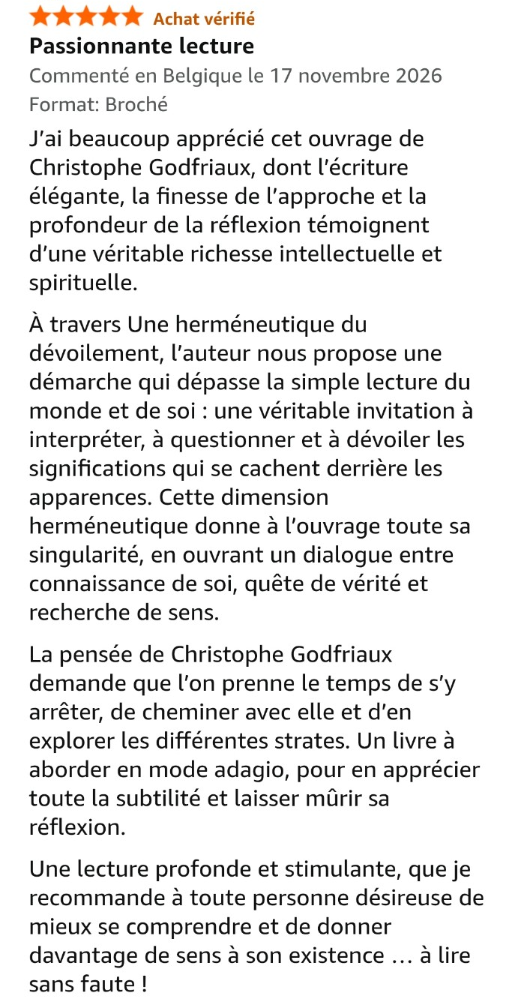

★★★★★
Passionnante lecture
« Un livre à aborder en mode adagio, pour en apprécier toute la subtilité et laisser mûrir sa réflexion. »


Quand un livre poursuit son chemin dans le regard de ses lecteurs.
Cette page accueille les échos de lecture d’Une herméneutique du dévoilement.
« Un livre à aborder en mode adagio, pour en apprécier toute la subtilité et laisser mûrir sa réflexion. »
